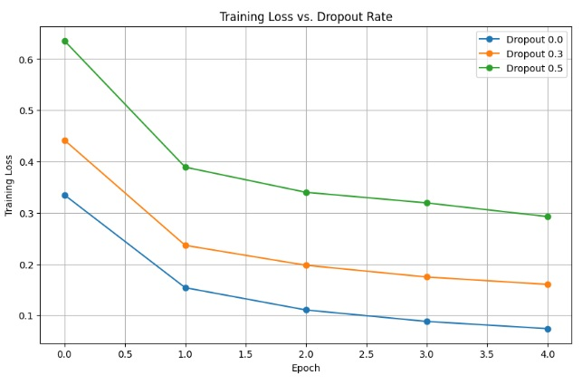

#DROPOUT_BLOGPOST#
The Vineyard Rule: A Dropout Lore on Deep Learning Regularization#
execute: enabled: true
Lore: The Vineyard of the Master Builder
In a quiet valley, there was a Vineyard owned by the Master Builder. Every season, the vines grew strong — but they had one weakness: They were too dependent on a few workers. When harvest came, only the strongest workers did all the labor, while the others stayed idle. Because of this, the vineyard grew unbalanced—some vines grew weak, others overripe, and the harvest lost its flavor. So the Master gave a new rule:
“Each day, some workers shall rest. Not because they are weak, but so all may grow strong.”
Each day, different workers were assigned to rest. The others had to learn new roles, new paths, new strengths. By harvest time, the vineyard had never been stronger. Every worker was prepared, every vine flourished, and the vineyard no longer depended on a chosen few.
WHAT IS DROPOUT?
Dropout is a regularization technique used in deep learning to prevent overfitting amd improve model generalization. It temporarily removes (drop) neurons during training to reduce co-adaptation
MECHANISM DURING TRAINING
During the training phase, a certain percentage of neurons are randomly turned off pr dropped for each forward / backward pass. - Action: This forces model to learn multiple, redundant pathways instead of depending too heavily on a small, co-adapted set of neurons *Like in the Master’s vineyard, some worker rest while others learn new role, new paths and new strengths
Mathematically, each neuron has a probabilty of p $\( h_i = h_i \cdot z_i, \quad z_i \sim \text{Bernoulli}(1-p) \)$
where: $\( \begin{aligned} \tilde{h}_i & = \text{dropped/active output} \\ h_i & = \text{original activation} \\ z_i & = \text{random mask (0 = dropped, 1 = active)} \\ p & = \text{dropout rate} \end{aligned} \)$
BENEFITS AND TRADEOFFS
Reduces Overfitting By randomly dropping neurons, the model is prevented from “memorizing” training data. Forcing it to learn robust, generalizable features that work even when some information is missing.
Improves Generalization The model performs better on unseen data because its reliance is spread across entire network.
Acts Like an Ensemble Randomly dropping neurons effectively creates many different “sub-networks”. Training with dopout is functionally equivalent to training a large ensemble of shared-weight netwroks simultaneously.
Slow Convergence Since fewer neurons are active during each training batch, the learning process takes a bit longer (ex: convergence is slightly slowerd), but the final quality of the model is much higher.
MECHANISM DURING INFERENCE
A crucial detail of DROPOUT is that the mechanism changes entirely when the model is used for inference (either testing, or prediction) - No dropping : During inference, no neurons are randomly dropped (\(p=0\)). All weights are used to achieve the highest predictive performancve. - Scaling Compensation: To ensure expected output magnitude remains consistent with what the model learned during training, the neuron outputs must be scaled. Since only a fraction \(1 - p\) of the neurons were active during training the final outputs are scaled by the same factor:
This is often referred to as weight scaling or inverted dropout (where the caling happens during training instead of inference which is the modern standard)
The scaling is neccessary because if all neurons were suddenly active without scaliung, the total input to the next layer would be higher than the model was trained for leading to skewed predictions
DEMONSTRATING ON MNIST
In here, we'll train the same CNN three times with different dropout rates:
0.0 → No dropout (baseline, likely overfit)
0.3 → Moderate dropout
0.5 → High dropout
Expectations:
0.0 → Low training loss, high overfitting
0.3 → Balanced performance
0.5 → Stable, slower learning, better generalization
IMPORT LIBRARIES
import torch
import torch.nn as nn
import torch.optim as optimp
from torchvision import datasets, transforms
from torch.utils.data import DataLoader
import matplotlib.pyplot as plt
These imports set up a PyTorch environment for building, training and evaluating a neural network on image data, with tools for data handling, optimizationm and visualization.
LOAD MNIST DATASET
transform = transforms.Compose([
transforms.ToTensor(),
transforms.Normalize((0.5,), (0.5,))
])
train_dataset = datasets.MNIST(root="data", train=True, download=True, transform=transform)
test_dataset = datasets.MNIST(root="data", train=False, transform=transform)
train_loader = DataLoader(train_dataset, batch_size=64, shuffle=True)
test_loader = DataLoader(test_dataset, batch_size=64)
This prepares the MNIST dataset for pytorch: by converting images to tensors, then normalizes them to the range [-1, 1] and packages them into a efficient iterable mini-batches of size 64 for model training & evaluation
Simple MLP with Variable Dropout
class MLP(nn.Module):
def __init__(self, dropout_rate):
super().__init__()
self.model = nn.Sequential(
nn.Flatten(),
nn.Linear(28*28, 256),
nn.ReLU(),
nn.Dropout(dropout_rate),
nn.Linear(256, 128),
nn.ReLU(),
nn.Dropout(dropout_rate),
nn.Linear(128, 10)
)
def forward(self, x):
return self.model(x)
Creating a 3-layer neural network with ReLU activation and Dropout regularizatiuon, designed to take a 28x28 image or 784 pixels and output a score of each of the 10 possible digit
Training Function
def train_model(dropout_rate, epochs=5):
model = MLP(dropout_rate)
criterion = nn.CrossEntropyLoss()
optimizer = optim.Adam(model.parameters(), lr=0.001)
train_losses = []
for epoch in range(epochs):
total_loss = 0
for images, labels in train_loader:
optimizer.zero_grad()
output = model(images)
loss = criterion(output, labels)
loss.backward()
optimizer.step()
total_loss += loss.item()
train_losses.append(total_loss / len(train_loader))
print(f"Dropout {dropout_rate} | Epoch {epoch+1} | Loss: {train_losses[-1]:.4f}")
return model, train_losses
This function takes a dropout rate, then initializes an MLP model then trains it on the train_loader data for a set number of epochs using the Adam optimizer and Cross-Entropy loss.
With different dropout rates
dropout_values = [0.0, 0.3, 0.5]
loss_results = {}
for d in dropout_values:
_, losses = train_model(d)
loss_results[d] = losses
In here, it systematically trains the MLP model three times, once for each dropout rate (0.0, 0.3, and 0.5) then collects the training loss history from each run. Then the results are stored in (loss_results) so they can be analyed and compared later via visualization in matplotlib, to dtermine the regulairzation effect of each dropout value.
Plot Loss Curves
plt.figure(figsize=(10,6))
for d in dropout_values:
plt.plot(loss_results[d], marker='o', label=f"Dropout {d}")
plt.xlabel("Epoch")
plt.ylabel("Training Loss")
plt.title("Training Loss vs. Dropout Rate")
plt.legend()
plt.grid()
plt.show()

The resulting loss plot displays the comparison of the regularization effects on different Dropout rates on a Multi Layer Perceptron (MLP) trained on the MNIST dataset. The processs involved defining data transformations and loaders, building an MLP with customizable dropout layers and running a training function three times with dropout rates of 0.0 (baseline), 0.3, and 0.5. The plot shows the classic trade-off: the model with no Dropout (0.0) achieved the lowest training loss, indicating it fit the training data best but is at high risk of overfittting; interestingly, the models with Dropout (0.3 & 0.5) exhibited an increasingly higher training losses, confirming that the regularization successfully restricts the models ability to memorize training data, thus promoting better generalization to unseen data
Dropout is a simple yet powerful regularization technique by deep learning. Through randomly deactivating neurons during training, it prevents the network from over-relying on any single pathway, thus encouraging redundancy and robustness, much like a vineyard thriving when some workers rest and others learna new role.
In this experiment with MLP on the MNIST datset showed clear effects of dropout rates:
No Dropout (0.0): Theres fast convergence and low training loss, however theres a high risk pf overfitting. This memorized the training data rather than learning generalizable patterns.
Moderate Dropout (0.3) : Slower convergence, but more stable learning and better generalization. Represents the “balanced vineyard” where all neurons participate effectively.
High Dropout (0.5): Slower learning & higher training loss, however robust to overfitting, can be useful when network size is large or dataset is small.
Important
KEY TAKEAWAYS FOR MODEL TUNING
Moderate dropout often provides the best trade-off between speed of learning and generalization
Very high dropout can slow training but improves the robustness for complex networks
Incorporating dropout is beneficial for preventing co-adaptation in dense layers.
Like a vineyard, a network grows strongest when neurons aka workers take turns “resting”, allowing the remaining neurons to explore new pathways and strengthen the system as a whole. Dropout makes sure that the model does not become dependent on a small subset of neurons, resulting in a more reliable and generalizable model.
REFERENCE
Hinton, G. E., Srivastava, N., Krizhevsky, A., Sutskever, I., & Salakhutdinov, R. R. (2014). Dropout: A Simple Way to Prevent Neural Networks from Overfitting. Journal of Machine Learning Research, 15(1), 1929-1958.